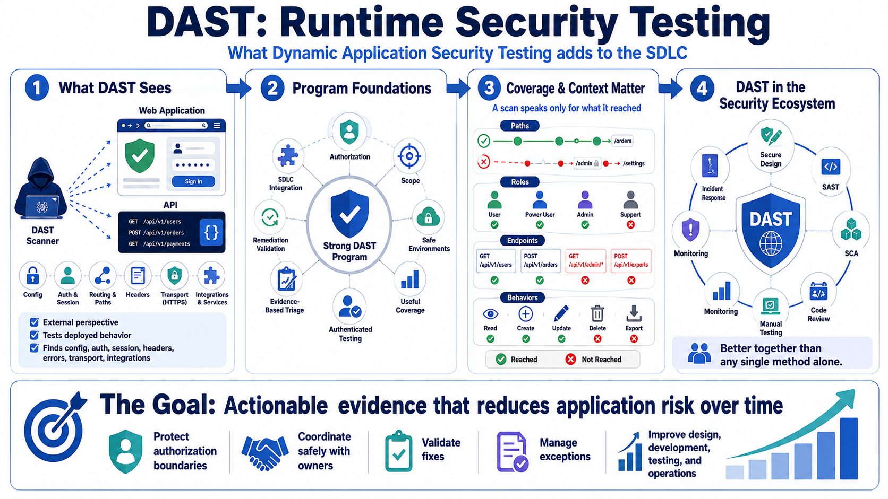

Course Summary and Key Takeaways
Connecting to LMS... Progress: in progress

Narration
DAST helps teams evaluate the runtime security behavior of web applications and APIs from an external perspective. It interacts with deployed behavior, so it can reveal issues created by configuration, routing, authentication, session handling, headers, errors, transport, and integrations. It is especially valuable because it observes what the application actually exposes, not only what the source code appears to say.
Strong DAST programs depend on authorization, scope, safe environments, useful coverage, authenticated testing, careful active checks, evidence-based triage, remediation validation, and integration into the secure SDLC. Coverage and context are central. A scan can only speak for the paths, roles, endpoints, and behaviors it reached and exercised.
DAST complements secure design, SAST, SCA, code review, manual testing, monitoring, and incident response. Static analysis can catch risky code before runtime. DAST can observe runtime behavior. Manual review can reason about business logic. Monitoring and response help after release. Together, these practices provide stronger assurance than any single testing method alone.
The goal is not to run more scans. The goal is actionable evidence that helps teams reduce application risk over time. A durable DAST program protects authorization boundaries, coordinates safely with owners, validates fixes, manages exceptions, and uses recurring findings to improve design, development, testing, and operations.